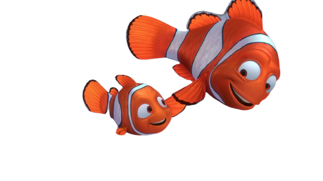

Nemo And Marlin
Nemo is a very energetic young clownfish. He is very eager to go to school at the beginning of the movie, but lazy at the end. He is also quite friendly towards anyone he meets. His father, Marlin's, overprotectiveness leads to him being frustrated most of the time, which leads him into being captured by scuba divers. Adventuring and exploring are some of his likes.
Marlin is a clownfish who makes his home inside a sea anemone in the Great Barrier Reef. He once had a mate named Coral who died in a barracuda attack, along with all but one of his children, whom he names Nemo.